"Las diosas del Océano"
De la serie "Habitantes Maravillosos"
Algo que hace nuestra vida más preciosa es la certeza que todos algún día vamos a morir. Eso promueve el principio de hacer nuestra huella significativa, de vivir nuestra vida de una manera que nuestros amigos puedan recordarnos con calidez, con una sonrisa sincera en sus rostros…
Supongo que esa misma razón es la que nos hace estar obsesionados con la muerte. Nadie sabe qué pasa después, si hay otra experiencia de vida o un completo vacío… Algunas personas tienen mucho miedo de ese momento. Y de alguna manera tratamos de evitar tanto como podamos esa irreversible instancia en la que nuestra vida termina. Destinamos muchos recursos económicos al descubrimiento del secreto de la juventud, a dilucidar qué podría prolongar nuestra vida, cómo estar más cercanos a la inmortalidad.
Pero por qué? Después de todo, el paso de cada ser vivo en el mundo es sólo transitorio…
Excepto…
Excepto...
Supongo que esa misma razón es la que nos hace estar obsesionados con la muerte. Nadie sabe qué pasa después, si hay otra experiencia de vida o un completo vacío… Algunas personas tienen mucho miedo de ese momento. Y de alguna manera tratamos de evitar tanto como podamos esa irreversible instancia en la que nuestra vida termina. Destinamos muchos recursos económicos al descubrimiento del secreto de la juventud, a dilucidar qué podría prolongar nuestra vida, cómo estar más cercanos a la inmortalidad.
Pero por qué? Después de todo, el paso de cada ser vivo en el mundo es sólo transitorio…
Excepto…
Excepto...
… Excepto que estemos hablando de Turritopsis nutricula, Laodicea undulata, Aurelia sp. o Turritopsis dohrnii.
Sí! Una vez más, el mundo nos muestra su ventaja sobre nosotros… No hay nada que querramos hacer que el Planeta Tierra no haya hecho primero.
No fue mi intención estropear el comienzo filosófico de este post. De hecho, estoy bastante involucrada en este tema y muy en contra de la negación de la mortalidad, pero decidí no meterme en esa pantanosa y serpenteante discusión. En su lugar, me voy a enfocar en estas especies increíbles, las diosas del océano:
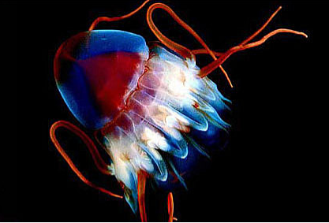 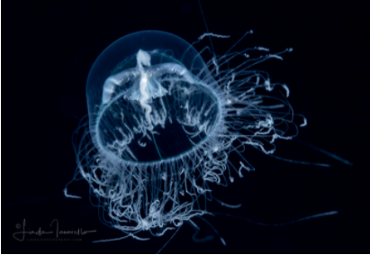 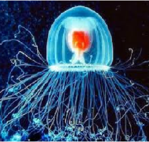 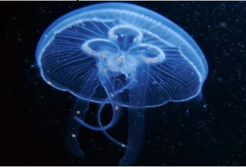
Sí! Una vez más, el mundo nos muestra su ventaja sobre nosotros… No hay nada que querramos hacer que el Planeta Tierra no haya hecho primero.
No fue mi intención estropear el comienzo filosófico de este post. De hecho, estoy bastante involucrada en este tema y muy en contra de la negación de la mortalidad, pero decidí no meterme en esa pantanosa y serpenteante discusión. En su lugar, me voy a enfocar en estas especies increíbles, las diosas del océano:
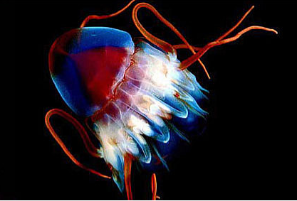 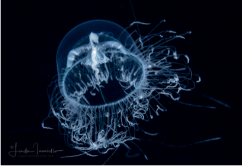 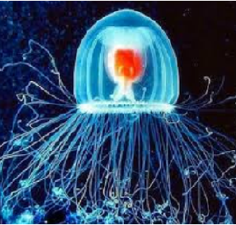 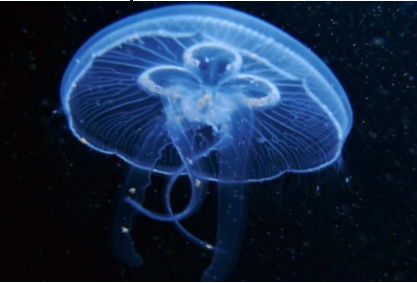
Turritopsis nutricula - Laodicea undulata - Aurelia sp. & Turritopsis dohrnii
Ellas arribaron al estrellato como “las medusas inmortales”, pero se parecen más a un caso genuino de Benjamin Button, dado que revierten su edad adulta a estadío de pólipo y comienzan de nuevo. Para profundizar, pueden “rejuvenecerse” en cualquier momento de su vida, varias veces, y en cada una, el código genético es exactamente el mismo que el original.
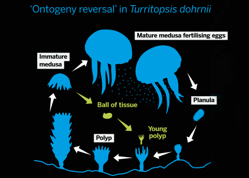
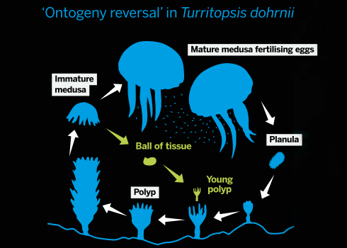
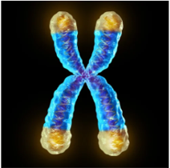Mientras tanto, si bien la investigación científica sobre longevidad ha avanzado un montón y sabemos cómo sucede (el acortamiento de los telómeros, DNA al extremo de los cromosomas que es perdido en cada división celular y conduce eventualmente a la senescencia) nosotros no podemos emular lo que las medusas inmortales hacen y por tanto estamos destinadas a morir cuando llegue el momento. Perdón por las malas (y viejas) noticias!
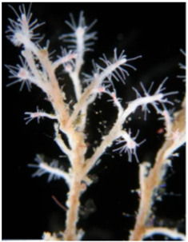Cuando las medusas de estas especies son dañadas físicamente, debilitadas por la edad o experiencian un estrés como la inanición, en lugar de morir desencadenan el fenómeno denominado "Transdiferenciación", a través del cual cambian el tipo celular y se convierten en pólipo otra vez. Basicamente, se encojen, reabsorben sus tentáculos y pierden su habilidad para nadar, permaneciendo adheridas a la superficie marina en un estado juvenil en forma de pólipo.
Sí, es un partido contra el paso del tiempo que los humanos estamos perdiendo (afortunadamente para la industria cosmética). Mira esta egocéntrica medusa riéndose de nosotros, los humanos!
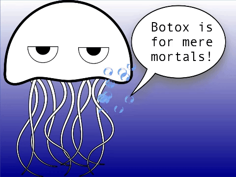
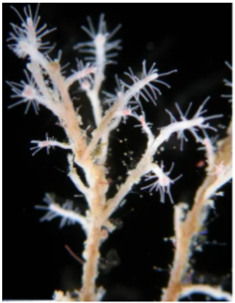Cuando las medusas de estas especies son dañadas físicamente, debilitadas por la edad o experiencian un estrés como la inanición, en lugar de morir desencadenan el fenómeno denominado "Transdiferenciación", a través del cual cambian el tipo celular y se convierten en pólipo otra vez. Basicamente, se encojen, reabsorben sus tentáculos y pierden su habilidad para nadar, permaneciendo adheridas a la superficie marina en un estado juvenil en forma de pólipo.
Sí, es un partido contra el paso del tiempo que los humanos estamos perdiendo (afortunadamente para la industria cosmética). Mira esta egocéntrica medusa riéndose de nosotros, los humanos!
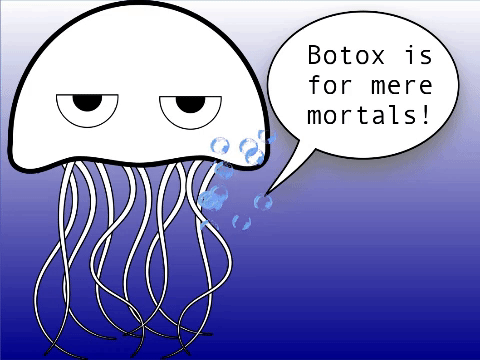
Si me hubiesen preguntado a mi, no habría elegido estas especies para ser inmortales. Yo hubiera preferido tener la eterna compañía de mi perrito de la infancia (snif, snif) -y más aún si eso hubiera significado que él iba a ser cachorrito una y otra vez!- (imaginen "mi cara de feliz cumpleaños" en este momento).
Sin embargo, el lento y rítmico movimiento de una medusa propulsándose en el agua me hace caer en una fantasía musical que me conduce a un estado de paz y quietud.… Me relajo y floto, balancéandome sin querer bajo los efectos de las corrientes de agua, bailando un vals con el océano... Lo encuentro muy hipnótico y bello…
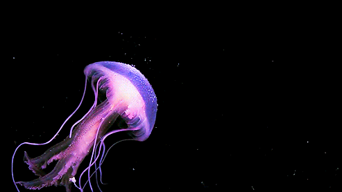
Sin embargo, el lento y rítmico movimiento de una medusa propulsándose en el agua me hace caer en una fantasía musical que me conduce a un estado de paz y quietud.… Me relajo y floto, balancéandome sin querer bajo los efectos de las corrientes de agua, bailando un vals con el océano... Lo encuentro muy hipnótico y bello…
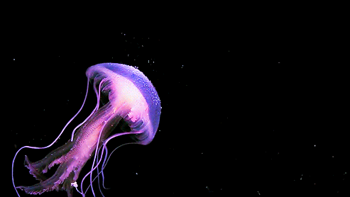
Ahora, dejémos atrás el balanceo y mi imaginación detrás y volvámos a la realidad. A pesar de este loco círculo de vida con el cual las medusas fueron obsequiadas, ellas pueden, de hecho, morir. No seas tont@, entonces!: si tienes una segunda oportunidad de estar aquí, y fortuitamente renacés siendo una medusa “inmortal”, ten en mente que eres un postre para ballenas, tiburones, tortugas marinas, cangrejos, algunas aves marinas y incluso algunos peces. Así que corre medusa, corre!

Luego de esta extraña referencia a Forrest Gump, quiero dejarlo bien en claro: desafortunadamente, estas medusas “inmortales” porlo general tienen una vida muy corta en la naturaleza.
Entiendo que parece ser una mala broma del destino, pero tiene sentido para mi... Una vida careciendo de riesgo no suena mucho a estar viviendo...
Después de todo tal vez es mejor ser sólo un mortal ser humano: tenemos más tiempo para descubrir todas las maravillas que el mundo tiene ocultas a plena vista, como estas porfiadas medusas, que se resisten a morir y viven por el contrario como diosas, desafiando el primer principio biológico, que algún día todos respiraremos por última vez.
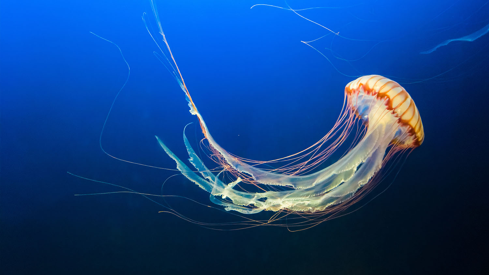
Fin…
Entiendo que parece ser una mala broma del destino, pero tiene sentido para mi... Una vida careciendo de riesgo no suena mucho a estar viviendo...
Después de todo tal vez es mejor ser sólo un mortal ser humano: tenemos más tiempo para descubrir todas las maravillas que el mundo tiene ocultas a plena vista, como estas porfiadas medusas, que se resisten a morir y viven por el contrario como diosas, desafiando el primer principio biológico, que algún día todos respiraremos por última vez.
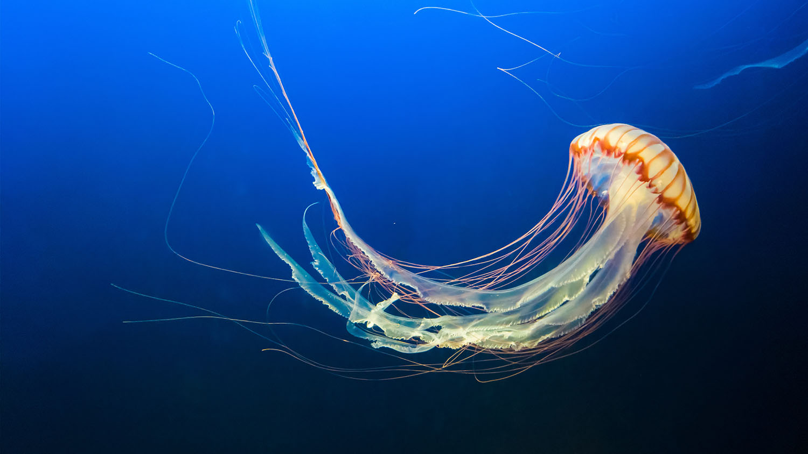
Fin…
Gracias por leerme!!
Espero que hayas disfrutado mucho mi trabajo! No sólo redacté el texto del post sino que también escribí el código de la página web y su diseño. El desafío es grande pero soy una estudiante muy estusiasta. :)
Por favor, dame tu "ME GUSTA" y COMPARTÍ la publicación para ayudarme a expandir la comunidad de habitantes maravillosos! Si accedes a través de una computadora, recordá que podés dejar tu comentario al final de la página. O podés enviarme un e-mail, si querés!. De cualquier manera que prefieras voy a apreciar mucho tu apoyo!.
Si te gustó el tema, te invito a leer el contenido BONUS debajo.
Estas medusas no sólo comparten la increíble habilidad de "resetearse" a sí mismas para evitar los peligros adyacentes. Tambián son invasoras muy agresivas. Es creído que las medudas inmortales son del Mar Mediterráneo, pero en la actualidad se encuentran en todos los océanos.
De todos modos, parece que somos nosotros la razón de este fuerte esparcimiento. Resulta que las medusas se aprovechan del "aventón" (o "hacer dedo") en barcos para dispersar sus genes alrededor de todo el mundo.
Realmente disfruté esta última información porque viajar y conocer nuevos lugares son estupendas cosas a hacer si gozas de una vida sin fin. Y más si es libre de cargos!!
Sin más que hacer, me despido por ahora! Hasta el próximo post!
Fuentes principales:
"La medusa inmortal" por el Museo Americano de Historia Natural
"Medusa inmortal: el secreto para engañar la muerte" por el Museo de Historia Natural
"Puede una medusa desbloquear el secreto de la inmortalidad?" por la Revista New York Times
"Vida eterna: la medusa inmortal" por el Biológo
De todos modos, parece que somos nosotros la razón de este fuerte esparcimiento. Resulta que las medusas se aprovechan del "aventón" (o "hacer dedo") en barcos para dispersar sus genes alrededor de todo el mundo.
Realmente disfruté esta última información porque viajar y conocer nuevos lugares son estupendas cosas a hacer si gozas de una vida sin fin. Y más si es libre de cargos!!
Sin más que hacer, me despido por ahora! Hasta el próximo post!
Fuentes principales:
"La medusa inmortal" por el Museo Americano de Historia Natural
"Medusa inmortal: el secreto para engañar la muerte" por el Museo de Historia Natural
"Puede una medusa desbloquear el secreto de la inmortalidad?" por la Revista New York Times
"Vida eterna: la medusa inmortal" por el Biológo